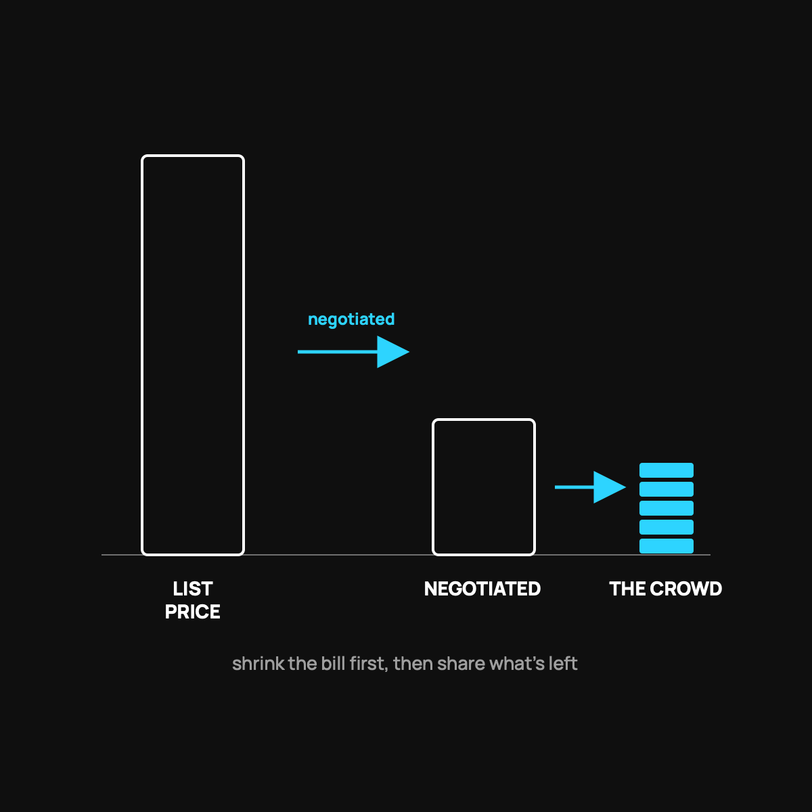

How a Big Hospital Bill Gets Paid Without Insurance
You pay $500, negotiators shrink the bill, the crowd funds the rest. Here's the real mechanism.
On health sharing, a big hospital bill goes like this: you pay the first $500, negotiators cut the bill down hard (cash-pay discounts commonly run 25 to 85 percent), and the community funds the rest, usually within about a week. CrowdHealth's crowd has done this for bills north of $600,000. Not insurance, not guaranteed, but real and fast.

A six-figure hospital bill is the thing everyone is quietly afraid of. It is the reason a lot of people keep paying for insurance they do not really understand. So let us walk through exactly what happens with health sharing when a genuinely big bill lands, step by step, using real examples. No hand-waving.
Start with a real one
CrowdHealth's community once funded a single bill of more than $643,000 for a serious injury. Another was over $437,000 for a newborn who needed intensive care. These are not small, easy bills. They are the nightmare scenario, and the crowd covered them. Here is how that actually works.
Step one: you get care and pay your $500
When something big happens, you go get treated like anyone else. You are a cash-pay patient, not an insurance patient, which sounds scary but is often an advantage. Your only fixed responsibility for that health event is the first $500. That is your member commitment. Everything eligible above it is what the community steps in to handle.
Step two: the negotiators go to work
This is the part that surprised me most. Before a single dollar gets crowdfunded, CrowdHealth's team negotiates the bill down. Hospitals have two prices, the inflated "list" price and the much lower cash price, which I explained in the cash price secret. Cash-pay discounts commonly run 25 to 85 percent off the sticker. So a $100,000 bill might become a $30,000 bill before the crowd is even asked. Shrinking the bill is the first line of defense.
Step three: the crowd funds the rest
Once the bill is negotiated, the need goes out to the community. Members chip in to fund it, the same way you have been chipping in for others each month. On average, a complete submission gets fully funded in about a week, and the money is reimbursed a couple of days after approval. It is a barn raising. Everyone brings a little, and together it covers the thing no single family could carry alone.
The honest catch
Because this is a community and not an insurance contract, there is no legal guarantee. The track record is strong, tens of thousands of bills funded, but "strong track record" is not "ironclad promise." You are also responsible for making sure your event is eligible under the guidelines. Read those before you join so you know what qualifies. I keep pointing people to the honest limits on purpose.
Why this often beats the insured version
With a high-deductible insurance plan, that same big event could cost you the full deductible, often five figures, before the plan helps at all. With health sharing, your fixed exposure for the event is $500, and a team is actively working to shrink the bill instead of a claims department working to deny it. Same emergency, very different math and very different feeling.
The takeaway
A big hospital bill on health sharing goes like this: you pay the first $500, negotiators cut the bill down hard, and the community funds the rest, usually within about a week. The crowd has done this for bills north of $600,000. It is not insurance and it is not guaranteed, but the mechanism is real, it is fast, and it has a public track record.
Questions I get about this
What's the biggest bill health sharing has paid?
CrowdHealth's community funded a single bill of more than $643,000 for a serious injury, and another over $437,000 for a newborn who needed intensive care. Those are the nightmare scenarios, and the crowd covered them.
Do I have to negotiate the hospital bill myself?
No. A care advocate and a team of negotiators work the bill down toward the cash price before a dollar gets crowdfunded. That's the part that surprised me most. If you're on your own, though, you can do a version of it yourself: How to Negotiate a Hospital Bill Yourself.
Is being a cash-pay patient a disadvantage?
It's often an advantage. Hospitals have an inflated list price and a much lower cash price. As a cash-pay patient you step out of the insurance haggling game entirely, which is exactly the cash price secret.
Want to see the guidelines and what your cost would be? Use my code NORMAL: look at CrowdHealth (opens in a new tab). New members get their first 3 months at $99 a month with code NORMAL.
My family of four uses CrowdHealth and I really believe in the model. If you join through my discount link (opens in a new tab) (code NORMAL), you get your first 3 months at $99 a month, and Normaltown USA earns a referral bonus if you stick around. It costs you nothing extra, and I only refer you to things I would tell a friend about. Health sharing is not insurance, and nothing here is medical, tax, or financial advice.

Written by David Dewese
Normal guy with a full-time job, wife, and kids. Spent twenty years pursuing music and creative ventures before starting a family. Sharing tips and tricks on how to thrive while living on an artist's income. Not a financial advisor. More about me.
New here?
Normaltown USA is plain-English money and healthcare help for normal people, written by a regular guy with a family of four. No jargon, no hype. Start here, or read the FAQ.